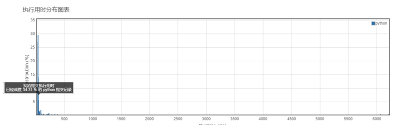
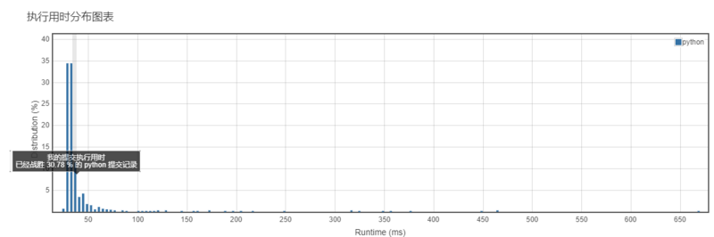
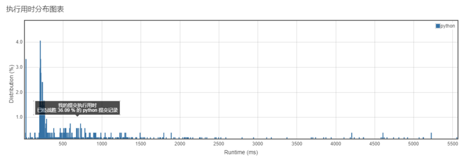

<!DOCTYPE html>
<html>
<head><meta name="generator" content="Hexo 3.8.0">
  <meta charset="utf-8">
  
  <title>Aloha | Gaga酱的奇思妙想</title>
  <meta name="viewport" content="width=device-width, initial-scale=1, maximum-scale=1">
  
    <meta name="keywords" content="萌萌の嘎嘎">
  
  
  
  
  <meta name="description" content="小李今天的做题，是痛并快乐着的！">
<meta name="keywords" content="leetcode,python">
<meta property="og:type" content="article">
<meta property="og:title" content="小李飞刀：做题第八弹！">
<meta property="og:url" content="http://yoursite.com/2019/03/18/小李飞刀：做题第八弹！/index.html">
<meta property="og:site_name" content="Gaga酱の奇思妙想">
<meta property="og:description" content="小李今天的做题，是痛并快乐着的！">
<meta property="og:locale" content="zh-Hans">
<meta property="og:image" content="http://yoursite.com/2019/03/18/小李飞刀：做题第八弹！/1.png">
<meta property="og:image" content="http://yoursite.com/2019/03/18/小李飞刀：做题第八弹！/2.png">
<meta property="og:image" content="http://yoursite.com/2019/03/18/小李飞刀：做题第八弹！/3.png">
<meta property="og:updated_time" content="2019-04-10T16:59:30.180Z">
<meta name="twitter:card" content="summary">
<meta name="twitter:title" content="小李飞刀：做题第八弹！">
<meta name="twitter:description" content="小李今天的做题，是痛并快乐着的！">
<meta name="twitter:image" content="http://yoursite.com/2019/03/18/小李飞刀：做题第八弹！/1.png">
  
  <link rel="icon" href="/css/images/favicon.png">
  
    <link href="//fonts.googleapis.com/css?family=Source+Code+Pro" rel="stylesheet" type="text/css">
  
  <link href="https://fonts.googleapis.com/css?family=Open+Sans|Montserrat:700" rel="stylesheet" type="text/css">
  <link href="https://fonts.googleapis.com/css?family=Roboto:400,300,300italic,400italic" rel="stylesheet" type="text/css">
  <link href="//cdn.bootcss.com/font-awesome/4.6.3/css/font-awesome.min.css" rel="stylesheet">
  <style type="text/css">
    @font-face{font-family:futura-pt;src:url(https://use.typekit.net/af/9749f0/00000000000000000001008f/27/l?subset_id=2&fvd=n5) format("woff2");font-weight:500;font-style:normal;}
    @font-face{font-family:futura-pt;src:url(https://use.typekit.net/af/90cf9f/000000000000000000010091/27/l?subset_id=2&fvd=n7) format("woff2");font-weight:500;font-style:normal;}
    @font-face{font-family:futura-pt;src:url(https://use.typekit.net/af/8a5494/000000000000000000013365/27/l?subset_id=2&fvd=n4) format("woff2");font-weight:lighter;font-style:normal;}
    @font-face{font-family:futura-pt;src:url(https://use.typekit.net/af/d337d8/000000000000000000010095/27/l?subset_id=2&fvd=i4) format("woff2");font-weight:400;font-style:italic;}</style>
    
  <link rel="stylesheet" id="athemes-headings-fonts-css" href="//fonts.googleapis.com/css?family=Yanone+Kaffeesatz%3A200%2C300%2C400%2C700&amp;ver=4.6.1" type="text/css" media="all">

  <link rel="stylesheet" id="athemes-headings-fonts-css" href="//fonts.googleapis.com/css?family=Oswald%3A300%2C400%2C700&amp;ver=4.6.1" type="text/css" media="all">
  <link rel="stylesheet" href="/css/style.css">

  <script src="/js/jquery-3.1.1.min.js"></script>

  <!-- Bootstrap core CSS -->
  <link rel="stylesheet" href="/css/bootstrap.css">
  <link rel="stylesheet" href="/css/fashion.css">
  <link rel="stylesheet" href="/css/glyphs.css">

</head>
</html>


  <body data-spy="scroll" data-target="#toc" data-offset="50">


  
  
  <div class="site-header-image">
    
  </div>

  <div id="header-blur" class="site-header-image blur" style="position: absolute; top:0; height: 207px; min-height: 207px; min-width: 100%;">
    
  </div>

  <script>
        var imgUrls = "css/images/pic0.jpg,css/images/pic2.png,css/images/pic4.jpg".split(",");
        var random = Math.floor((Math.random() * imgUrls.length ));
        if (imgUrls[random].startsWith('http') || imgUrls[random].indexOf('://') >= 0) {
          document.getElementById("originBg").src=imgUrls[random];
          document.getElementById("blurBg").src=imgUrls[random];
        } else {
          document.getElementById("originBg").src='/' + imgUrls[random];
          document.getElementById("blurBg").src='/' + imgUrls[random];
        }
    </script>


<header id="allheader" class="site-header" role="banner" style="width: 100%; position: absolute; top:0; background: rgba(255,255,255,.8);">
  <div class="clearfix container">
      <div class="site-branding">

          <h3 class="site-title">
            
              <a href="/" title="Gaga酱の奇思妙想" rel="home"> Gaga酱の奇思妙想 </a>
            
          </h3>
          
          
            <div class="site-description">深水静流</div>
          
            
          <nav id="main-navigation" class="main-navigation" role="navigation">
            <a class="nav-open">Menu</a>
            <a class="nav-close">Close</a>

            <div class="clearfix sf-menu">
              <ul id="main-nav" class="menu sf-js-enabled sf-arrows" style="touch-action: pan-y;">
                    
                      <li class="menu-item menu-item-type-custom menu-item-object-custom menu-item-home menu-item-1663"> <a class href="/">冲鸭❤</a> </li>
                    
                      <li class="menu-item menu-item-type-custom menu-item-object-custom menu-item-home menu-item-1663"> <a class href="/archives">archives❤</a> </li>
                    
                      <li class="menu-item menu-item-type-custom menu-item-object-custom menu-item-home menu-item-1663"> <a class href="/categories">碎碎念的基本法❤</a> </li>
                    
                      <li class="menu-item menu-item-type-custom menu-item-object-custom menu-item-home menu-item-1663"> <a class href="/tags">tags❤</a> </li>
                    
                      <li class="menu-item menu-item-type-custom menu-item-object-custom menu-item-home menu-item-1663"> <a class href="/about">岁月如歌❤</a> </li>
                    
                      <li class="menu-item menu-item-type-custom menu-item-object-custom menu-item-home menu-item-1663"> <a class href="/books">阅❤</a> </li>
                    
                      <li class="menu-item menu-item-type-custom menu-item-object-custom menu-item-home menu-item-1663"> <a class href="/movies">影❤</a> </li>
                    
              </ul>
            </div>
          </nav>

      </div>
  </div>
</header>


  <div id="container">
    <div id="wrap">
            
      <div id="content" class="outer">
        
          <section id="main" style="float:none;"><article id="post-小李飞刀：做题第八弹！" style="width: 66%; float:left;" class="article article-type-post" itemscope itemprop="blogPost">
  <div id="articleInner" class="clearfix post-1016 post type-post status-publish format-standard has-post-thumbnail hentry category-template-2 category-uncategorized tag-codex tag-edge-case tag-featured-image tag-image tag-template">
    
    
      <header class="article-header">
        
  
    <h1 class="thumb" itemprop="name">
      小李飞刀：做题第八弹！
    </h1>
  

      </header>
    
    <div class="article-meta">
      
	<a href="/2019/03/18/小李飞刀：做题第八弹！/" class="article-date">
	  <time datetime="2019-03-18T15:01:27.000Z" itemprop="datePublished">March 18, 2019</time>
	</a>

      
	<span class="ico-folder"></span>
    <a class="article-category-link" href="/categories/小李の放学后/">小李の放学后</a>
 
      
    </div>
    <div class="article-entry" itemprop="articleBody">
      
        <p></p>
<h4 id="写在前面的话"><a href="#写在前面的话" class="headerlink" title="写在前面的话"></a>写在前面的话</h4><p>慢慢转变思路，不再死磕不会做的题，思路可以先借鉴，但是一定要吃透透。<br>上周末看完看完了《算法图解》，感觉对一些题目的思路有比较大的帮助，但是还是要在实践中理解。</p>
<h4 id="认真做题的分割线"><a href="#认真做题的分割线" class="headerlink" title="认真做题的分割线"></a>认真做题的分割线</h4><h5 id="第一题"><a href="#第一题" class="headerlink" title="第一题"></a>第一题</h5><p><strong><a href="https://leetcode-cn.com/problems/maximum-product-subarray/" target="_blank" rel="noopener">152. 乘积最大子序列</a></strong><br><strong>难度：中等</strong><br>给定一个整数数组<code>nums</code>，找出一个序列中乘积最大的连续子序列（该序列至少包含一个数）。<br><strong>我的题解：</strong><br><figure class="highlight python"><table><tr><td class="code"><pre><span class="line"><span class="class"><span class="keyword">class</span> <span class="title">Solution</span><span class="params">(object)</span>:</span></span><br><span class="line">    <span class="function"><span class="keyword">def</span> <span class="title">maxProduct</span><span class="params">(self, nums)</span>:</span></span><br><span class="line">        <span class="string">"""</span></span><br><span class="line"><span class="string">        :type nums: List[int]</span></span><br><span class="line"><span class="string">        :rtype: int</span></span><br><span class="line"><span class="string">        """</span></span><br><span class="line">        length = len(nums)</span><br><span class="line">        maxsum = [<span class="number">0</span> <span class="keyword">for</span> _ <span class="keyword">in</span> range(length)]</span><br><span class="line">        minsum = [<span class="number">0</span> <span class="keyword">for</span> _ <span class="keyword">in</span> range(length)]</span><br><span class="line">        maxsum[<span class="number">0</span>] = minsum[<span class="number">0</span>] = nums[<span class="number">0</span>] <span class="comment"># 限定最大最小值</span></span><br><span class="line">        dp = nums[<span class="number">0</span>] <span class="comment">#当前状态</span></span><br><span class="line">        <span class="keyword">for</span> i <span class="keyword">in</span> range(<span class="number">1</span>,len(nums)):</span><br><span class="line">            maxsum[i] = max(maxsum[i<span class="number">-1</span>]*nums[i],minsum[i<span class="number">-1</span>]*nums[i],nums[i])</span><br><span class="line">            minsum[i] = min(maxsum[i<span class="number">-1</span>]*nums[i],minsum[i<span class="number">-1</span>]*nums[i],nums[i])</span><br><span class="line">            dp = max(dp,maxsum[i])</span><br><span class="line">        <span class="keyword">return</span> dp</span><br></pre></td></tr></table></figure></p>
<p></p>
<p><strong>我的思路：</strong><br>这题做了两次，主体思路为：每次都找到乘积中的<code>最大正值</code>和<code>最小负值</code>，因为绝对值最大的两个数在下一次计算中才有可能成为最大值。（毕竟题目没有限制非负数）<br>第一次的时候报错的原因是，我记录了每次的maxsum和minsum，没有记录上一次循环留下的值。<br>然鹅，上一次的状态会影响到下一次的状态，所以必须记住上一步的最优解。<br>可以判断是个NP问题，但是动态规划还得多多练习</p>
<h5 id="第二题"><a href="#第二题" class="headerlink" title="第二题"></a>第二题</h5><p><strong><a href="https://leetcode-cn.com/problems/happy-number/" target="_blank" rel="noopener">202. 快乐数</a></strong><br><strong>难度：简单</strong><br>编写一个算法来判断一个数是不是“快乐数”。</p>
<p>一个“快乐数”定义为：对于一个正整数，每一次将该数替换为它每个位置上的数字的平方和，然后重复这个过程直到这个数变为 1，也可能是无限循环但始终变不到 1。如果可以变为 1，那么这个数就是快乐数。<br><strong>我的题解：</strong><br><figure class="highlight python"><table><tr><td class="code"><pre><span class="line"><span class="class"><span class="keyword">class</span> <span class="title">Solution</span><span class="params">(object)</span>:</span></span><br><span class="line">    <span class="function"><span class="keyword">def</span> <span class="title">isHappy</span><span class="params">(self, n)</span>:</span></span><br><span class="line">        <span class="string">"""</span></span><br><span class="line"><span class="string">        :type n: int</span></span><br><span class="line"><span class="string">        :rtype: bool</span></span><br><span class="line"><span class="string">        """</span></span><br><span class="line">        l = []</span><br><span class="line">        <span class="keyword">while</span> <span class="number">1</span>:</span><br><span class="line">            l.append(n)</span><br><span class="line">            n = sum([int(i)**<span class="number">2</span> <span class="keyword">for</span> i <span class="keyword">in</span> str(n)])</span><br><span class="line">            <span class="keyword">if</span> n == <span class="number">1</span>:</span><br><span class="line">                <span class="keyword">return</span> <span class="literal">True</span></span><br><span class="line">            <span class="keyword">elif</span> n <span class="keyword">in</span> l:</span><br><span class="line">                <span class="keyword">return</span> <span class="literal">False</span></span><br></pre></td></tr></table></figure></p>
<p></p>
<p><strong>我的思路：</strong><br>条件一：要判断每次的值是否各位平方总和为1，得出是快乐数的结论；<br>条件二：为了得出非快乐数的结论，这个数可能会陷入循环，那么就要记录下每轮的值，并进行比对。<br><strong>其他：</strong><br>在评论中发现了一个很有趣的算法，就是用dict记录下肯定会循环的数字的词典，当遇到相关数字的时候就可以跳出了。<br>一般为{4,16,37,58,89,145,42,20}</p>
<h5 id="第三题"><a href="#第三题" class="headerlink" title="第三题"></a>第三题</h5><p><strong><a href="https://leetcode-cn.com/problems/count-primes/" target="_blank" rel="noopener">204. 计数质数</a></strong><br><strong>难度：简单</strong><br>统计所有小于非负整数 n 的质数的数量。<br><strong>我的题解：</strong><br><figure class="highlight python"><table><tr><td class="code"><pre><span class="line"><span class="class"><span class="keyword">class</span> <span class="title">Solution</span><span class="params">(object)</span>:</span></span><br><span class="line">    <span class="function"><span class="keyword">def</span> <span class="title">countPrimes</span><span class="params">(self, n)</span>:</span></span><br><span class="line">        <span class="string">"""</span></span><br><span class="line"><span class="string">        :type n: int</span></span><br><span class="line"><span class="string">        :rtype: int</span></span><br><span class="line"><span class="string">        """</span></span><br><span class="line">        <span class="keyword">if</span> n &lt; <span class="number">3</span>:</span><br><span class="line">            <span class="keyword">return</span> <span class="number">0</span></span><br><span class="line">        <span class="keyword">else</span>:</span><br><span class="line">            output = [<span class="number">1</span>]*n</span><br><span class="line">            output[<span class="number">0</span>],output[<span class="number">1</span>] = <span class="number">0</span>,<span class="number">0</span></span><br><span class="line">            <span class="keyword">for</span> i <span class="keyword">in</span> range(<span class="number">2</span>,int(n**<span class="number">0.5</span>+<span class="number">1</span>)):</span><br><span class="line">                <span class="keyword">if</span> output[i] == <span class="number">1</span>:</span><br><span class="line">                    m = i**<span class="number">2</span></span><br><span class="line">                    <span class="keyword">while</span> m &lt; n:</span><br><span class="line">                        output[m] = <span class="number">0</span></span><br><span class="line">                        m += i</span><br><span class="line">        <span class="keyword">return</span> sum(output)</span><br></pre></td></tr></table></figure></p>
<p></p>
<p><strong>我的思路：</strong><br>这个算法借鉴了评论里的一个炒鸡有趣的算法，默认查询是否质数的时候，我们习惯用循环判断，这样肯定会超时。<br>而这个算法呢，叫做<code>厄拉多塞筛法</code>，他给了如下解释：</p>
<blockquote>
<p>比如说求20以内质数的个数,首先0,1不是质数.2是第一个质数,然后把20以内所有2的倍数划去.2后面紧跟的数即为下一个质数3,然后把3所有的倍数划去.3后面紧跟的数即为下一个质数5,再把5所有的倍数划去.以此类推</p>
</blockquote>
<p>包括他的题解的写法也很有趣，但是我还没弄明白<br><code>output[i*i:n:i] = [0] * len(output[i*i:n:i])</code>这一句的意思，还要琢磨下，所以用的是循环的写法。<br><figure class="highlight verilog"><table><tr><td class="code"><pre><span class="line">def countPrimes(self, n: <span class="keyword">int</span>) -&gt; <span class="keyword">int</span>:</span><br><span class="line">        <span class="keyword">if</span> n &lt; <span class="number">3</span>:</span><br><span class="line">            <span class="keyword">return</span> <span class="number">0</span>     </span><br><span class="line">        <span class="keyword">else</span>:</span><br><span class="line">            # 首先生成了一个全部为<span class="number">1</span>的列表</span><br><span class="line">            <span class="keyword">output</span> = [<span class="number">1</span>] * n</span><br><span class="line">            # 因为<span class="number">0</span>和<span class="number">1</span>不是质数,所以列表的前两个位置赋值为<span class="number">0</span></span><br><span class="line">            <span class="keyword">output</span>[<span class="number">0</span>],<span class="keyword">output</span>[<span class="number">1</span>] = <span class="number">0</span>,<span class="number">0</span></span><br><span class="line">             # 此时从index = <span class="number">2</span>开始遍历,<span class="keyword">output</span>[<span class="number">2</span>]==<span class="number">1</span>,即表明第一个质数为<span class="number">2</span>,然后将<span class="number">2</span>的倍数对应的索引</span><br><span class="line">             # 全部赋值为<span class="number">0</span>. 此时<span class="keyword">output</span>[<span class="number">3</span>] == <span class="number">1</span>,即表明下一个质数为<span class="number">3</span>,同样划去<span class="number">3</span>的倍数.以此类推.</span><br><span class="line">            <span class="keyword">for</span> i in range(<span class="number">2</span>,<span class="keyword">int</span>(n**<span class="number">0</span><span class="variable">.5</span>)+<span class="number">1</span>): </span><br><span class="line">                <span class="keyword">if</span> <span class="keyword">output</span>[i] == <span class="number">1</span>:</span><br><span class="line">                    <span class="keyword">output</span>[i*i:n:i] = [<span class="number">0</span>] * len(<span class="keyword">output</span>[i*i:n:i])</span><br><span class="line">         # 最后<span class="keyword">output</span>中的数字<span class="number">1</span>表明该位置上的索引数为质数,然后求和即可.</span><br><span class="line">        <span class="keyword">return</span> sum(<span class="keyword">output</span>)</span><br></pre></td></tr></table></figure></p>
<h4 id="总结"><a href="#总结" class="headerlink" title="总结"></a>总结</h4><p>小李今天的做题，是痛并快乐着的！</p>
      
    </div>
    <footer class="entry-meta entry-footer">
      
	<span class="ico-folder"></span>
    <a class="article-category-link" href="/categories/小李の放学后/">小李の放学后</a>

      
  <span class="ico-tags"></span>
  <ul class="article-tag-list"><li class="article-tag-list-item"><a class="article-tag-list-link" href="/tags/leetcode/">leetcode</a></li><li class="article-tag-list-item"><a class="article-tag-list-link" href="/tags/python/">python</a></li></ul>

      
        
	<div id="comment">
	
	<!-- 多说评论框 start -->
	 <div class="ds-thread" data-thread-key="/2019/03/18/小李飞刀：做题第八弹！/" data-title="小李飞刀：做题第八弹！" data-url="http://yoursite.com/2019/03/18/小李飞刀：做题第八弹！/"></div>
	<!-- 多说评论框 end -->
	<!-- 多说公共JS代码 start (一个网页只需插入一次) -->
	<script type="text/javascript">
	var duoshuoQuery = {short_name:"iTimeTraveler"};
	  (function() {
	    var ds = document.createElement('script');
	    ds.type = 'text/javascript';ds.async = true;
	    ds.src = (document.location.protocol == 'https:' ? 'https:' : 'http:') + '//static.duoshuo.com/embed.js';
	    ds.charset = 'UTF-8';
	    (document.getElementsByTagName('head')[0] 
	     || document.getElementsByTagName('body')[0]).appendChild(ds);
	  })();
	  </script>
	<!-- 多说公共JS代码 end -->
	
	</div>
	<link rel="stylesheet" href="/css/comment.css">


      
    </footer>
    <hr class="entry-footer-hr">
  </div>
  
    
<nav id="article-nav">
  
    <a href="/2019/03/19/小李飞刀：做题第九弹！/" id="article-nav-newer" class="article-nav-link-wrap">
      <strong class="article-nav-caption">Newer</strong>
      <div class="article-nav-title">
        
          小李飞刀：做题第九弹！
        
      </div>
    </a>
  
  
    <a href="/2019/03/17/Y想-190317/" id="article-nav-older" class="article-nav-link-wrap">
      <strong class="article-nav-caption">Older</strong>
      <div class="article-nav-title">Y想-190317</div>
    </a>
  
</nav>

  
</article>

<!-- Table of Contents -->

  <aside id="sidebar">
    <div id="toc" class="toc-article">
    <strong class="toc-title">Contents</strong>
    
      <ol class="nav"><li class="nav-item nav-level-4"><a class="nav-link" href="#写在前面的话"><span class="nav-number">1.</span> <span class="nav-text">写在前面的话</span></a></li><li class="nav-item nav-level-4"><a class="nav-link" href="#认真做题的分割线"><span class="nav-number">2.</span> <span class="nav-text">认真做题的分割线</span></a><ol class="nav-child"><li class="nav-item nav-level-5"><a class="nav-link" href="#第一题"><span class="nav-number">2.1.</span> <span class="nav-text">第一题</span></a></li><li class="nav-item nav-level-5"><a class="nav-link" href="#第二题"><span class="nav-number">2.2.</span> <span class="nav-text">第二题</span></a></li><li class="nav-item nav-level-5"><a class="nav-link" href="#第三题"><span class="nav-number">2.3.</span> <span class="nav-text">第三题</span></a></li></ol></li><li class="nav-item nav-level-4"><a class="nav-link" href="#总结"><span class="nav-number">3.</span> <span class="nav-text">总结</span></a></li></ol>
    
    </div>
  </aside>
</section>
        
      </div>

    </div>
    <!-- <nav id="mobile-nav">
  
    <a href="/" class="mobile-nav-link">冲鸭❤</a>
  
    <a href="/archives" class="mobile-nav-link">archives❤</a>
  
    <a href="/categories" class="mobile-nav-link">碎碎念的基本法❤</a>
  
    <a href="/tags" class="mobile-nav-link">Tags❤</a>
  
    <a href="/about" class="mobile-nav-link">岁月如歌❤</a>
  
    <a href="/books" class="mobile-nav-link">阅❤</a>
  
    <a href="/movies" class="mobile-nav-link">影❤</a>
  
</nav> -->
    <footer id="footer" class="site-footer">
  

  <div class="clearfix container">
      <div class="site-info">
	      &copy; 2019 Gaga酱の奇思妙想 All Rights Reserved.
        
      </div>
      <div class="site-credit">
        Theme by <a href="https://github.com/iTimeTraveler/hexo-theme-hipaper" target="_blank">hipaper</a>
      </div>
  </div>
</footer>


<!-- min height -->

<script>
    var wrapdiv = document.getElementById("wrap");
    var contentdiv = document.getElementById("content");

    wrapdiv.style.minHeight = document.body.offsetHeight - document.getElementById("allheader").offsetHeight - document.getElementById("footer").offsetHeight + "px";
    contentdiv.style.minHeight = document.body.offsetHeight - document.getElementById("allheader").offsetHeight - document.getElementById("footer").offsetHeight + "px";


    <!-- headerblur min height -->
    
      var headerblur = document.getElementById("header-blur");
      headerblur.style.minHeight = window.getComputedStyle(document.getElementById("allheader"), null).height;
    
    
</script>
    
<div style="display: none;">
  <script src="https://s11.cnzz.com/z_stat.php?id=1260716016&web_id=1260716016" language="JavaScript"></script>
</div>

<!-- mathjax config similar to math.stackexchange -->

<script type="text/x-mathjax-config">
  MathJax.Hub.Config({
    tex2jax: {
      inlineMath: [ ['$','$'], ["\\(","\\)"] ],
      processEscapes: true
    }
  });
</script>

<script type="text/x-mathjax-config">
    MathJax.Hub.Config({
      tex2jax: {
        skipTags: ['script', 'noscript', 'style', 'textarea', 'pre', 'code']
      }
    });
</script>

<script type="text/x-mathjax-config">
    MathJax.Hub.Queue(function() {
        var all = MathJax.Hub.getAllJax(), i;
        for(i=0; i < all.length; i += 1) {
            all[i].SourceElement().parentNode.className += ' has-jax';
        }
    });
</script>

<script type="text/javascript" src="https://cdn.mathjax.org/mathjax/latest/MathJax.js?config=TeX-AMS-MML_HTMLorMML">
</script>


  <link rel="stylesheet" href="/fancybox/jquery.fancybox.css">
  <script src="/fancybox/jquery.fancybox.pack.js"></script>


<script src="/js/script.js"></script>
<script src="/js/bootstrap.js"></script>
<script src="/js/main.js"></script>


  <script type="text/javascript" src="js/love.js"></script>
  <script type="text/javascript" src="js/float.js"></script>
  <script type="text/javascript" src="js/typewriter.js"></script>
  <script type="text/javascript" color="0,104,183" opacity="1" zindex="-1" count="50" src="js/particle.js"></script>
  </div>

  <a id="rocket" href="#top" class=""></a>
  <script type="text/javascript" src="/js/totop.js" async=""></script>
</body>
</html>
